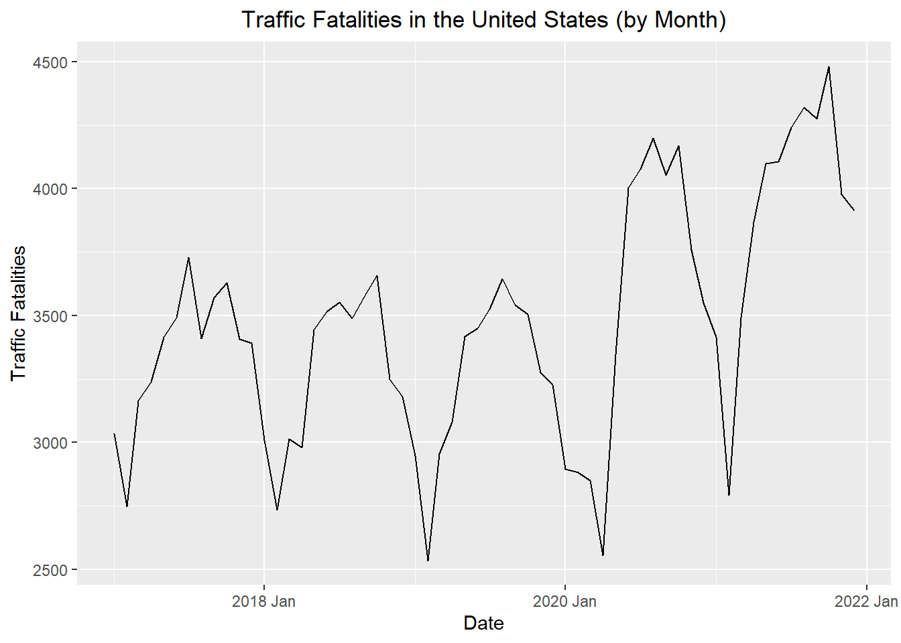

Month Year Deaths
1 Jan 2021 3414
2 Feb 2021 2792
3 Mar 2021 3492
4 Apr 2021 3868
5 May 2021 4098
6 Jun 2021 4107
7 Jul 2021 4240
8 Aug 2021 4320
9 Sep 2021 4276
10 Oct 2021 4482
11 Nov 2021 3977
12 Dec 2021 3914
13 Jan 2020 2895
14 Feb 2020 2883
15 Mar 2020 2850
16 Apr 2020 2555
17 May 2020 3346
18 Jun 2020 4004
19 Jul 2020 4078
20 Aug 2020 4199
21 Sep 2020 4053
22 Oct 2020 4169
23 Nov 2020 3757
24 Dec 2020 3550
25 Jan 2019 2948
26 Feb 2019 2535
27 Mar 2019 2956
28 Apr 2019 3079
29 May 2019 3417
30 Jun 2019 3449
31 Jul 2019 3527
32 Aug 2019 3645
33 Sep 2019 3543
34 Oct 2019 3506
35 Nov 2019 3274
36 Dec 2019 3228
37 Jan 2018 3010
38 Feb 2018 2734
39 Mar 2018 3015
40 Apr 2018 2979
41 May 2018 3443
42 Jun 2018 3514
43 Jul 2018 3552
44 Aug 2018 3490
45 Sep 2018 3579
46 Oct 2018 3657
47 Nov 2018 3250
48 Dec 2018 3181
49 Jan 2017 3034
50 Feb 2017 2748
51 Mar 2017 3164
52 Apr 2017 3238
53 May 2017 3416
54 Jun 2017 3492
55 Jul 2017 3730
56 Aug 2017 3409
57 Sep 2017 3572
58 Oct 2017 3629
59 Nov 2017 3408
60 Dec 2017 3391
# Method 1: Create date from scratch based on pattern of rows# This only works if the data are in the right orderstart_date <- lubridate::ymd("2017-01-01")date_seq <-seq(start_date, start_date +months(nrow(deaths_df)-1),by ="1 months")deaths_tibble <-tibble(dates = date_seq,year = lubridate::year(date_seq),month = lubridate::month(date_seq),value =pull(deaths_df, Deaths))# Method 2: Build using the given date informationdeaths_tibble <- deaths_df |>mutate(date_str =paste("1", Month, Year),dates =dmy(date_str),year = lubridate::year(dates),month = lubridate::month(dates),value = Deaths ) |> dplyr::select(dates, year, month, value) |>tibble()deaths_ts <- deaths_tibble |>mutate(index = tsibble::yearmonth(dates)) |>as_tsibble(index = index)deaths_ts <- deaths_ts %>%mutate(m_hat = ( (1/2) *lag(value,6)+lag(value,5)+lag(value,4)+lag(value,3)+lag(value,2)+lag(value,1)+ value+lead(value,1)+lead(value,2)+lead(value,3)+lead(value,4)+lead(value,5 )+ (1/2) *lead(value,6) ) /12 )
Without adjusting the y-axis
autoplot(deaths_ts, .vars = value) +labs(x ="Date",y ="Traffic Fatalities",title ="Traffic Fatalities in the United States (by Month)" ) +theme(plot.title =element_text(hjust =0.5))

After adjusting the y-axis
autoplot(deaths_ts, .vars = value) +labs(x ="Date",y ="Traffic Fatalities",title ="Traffic Fatalities in the United States (by Month)" ) +ylim(c(0,4500)) +theme(plot.title =element_text(hjust =0.5))